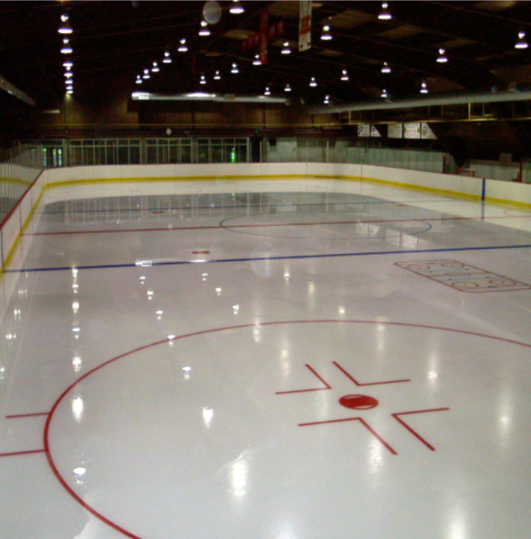

Ice skating
Recently, I have taken up the hobby of ice skating. I began just as winter break began for me, wich was towards the end of December. It started as a way to fight off the boredom of the pre-Christmas week, but later transformed into something that I very much enjoy. I have greatly approved in my abilities since I set foot on the ice several weeks ago.
Learning
One of the things that I have had to do is learn to ice skate. It seemed an imposing task at first, but I slowly have improved. I went from not being able to do a single lap around without falling down to being able to sprint up and down, and do sharp turns and quick stops. The first thing to learn is that it is not about walking on the ice; it is completely different from walking. You have to get used to pushing out and away from your body instead of behind. It is the only way to move forward efficiently. Once you accept this, you have to learn to balance yourself. At this stage, you don't really like pushing your legs out too far. You have to waddle down the ice, but the motion is developing. It is important to reach this stage because it shows you that you are making progress. You can begin to go in a straight line without falling down, and you can pick up a bit of speed. Most importantly, it gives you the confidence to step away from the wall and try new things. The only way to get to this stage is persistence, really. You have to fall down and then get back up. It is the only way to develop the balance and feel necessary to improve. Although it does not seem to come quickly (and sometimes it does not seem to be coming at all,) it is going to click eventually. After this, I began learning how to pick up speed and accelerate. This is when the work starts to pay off as you can shoot down the rink with the air hitting your face. Eventually I was going fast enough that I needed a way to stop other than crashing into the boards or turning away from them at the last minute, so I learned to turn my foot and shave off a thin layer of ice. I am really enjoying myself and look to keep doing this for a long time.
What I want to learn
There are quite a few things that I think learning would make me a much better skater. First, I think I need a proper way to stop. The shaving the ice method does not cut it when you want to change direction quickly and in a short distance. However, I think this is a more advanced skill that will take a while to learn and perfect, so I am saving it for later. Something that is more achievable to learn is skating backwards. The motion is simple enough. The problem for me, and for many, though, is perfecting it and integrating the strokes together to form a fluid motion. After learning that, I believe I will have a relatively solid grasp of ice skating techniques. The only real thing for me tolearn at that point is how to do crossovers. These let you speed up (or at least maintain your speed) as you go through corners. I believe that it is a good skill to have for skating fast.
Equipment
For the most part, I have not needed anthing aside from skates to rent. I have found that I am a size seven, even though I usually wear 10.5s when I am wearing runnings shoes or cleats. One reason for this is that you do need to have much tighter skates than regular shoes. This keeps the skates from sliding around on your foot, and having your feet learn inwards. If I continue to do ths frequently, I may consider buying my own because they can be maintained better and because they would fit better after an initial period of being broken in. One thing that I have found useful when skating is a pair of thick, long socks. Sometimes the tips of the skates rub up against your calves, and it can cause blisters after an extended period of time. It just makes it a little bit easier on your skin.